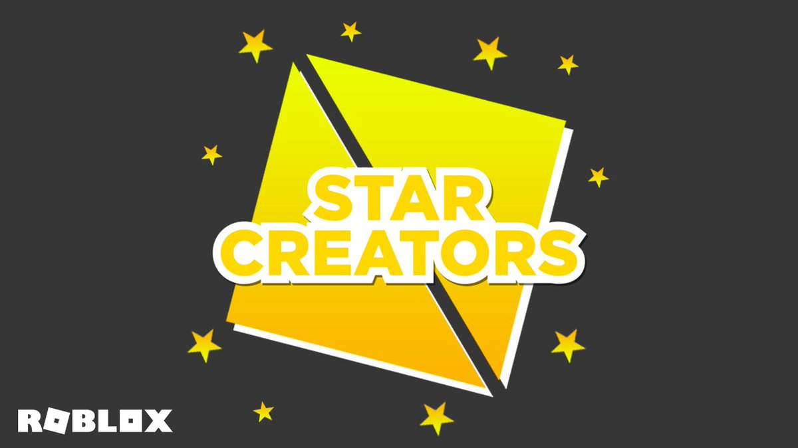

todos los roblox star video creator

--------------------------
List of Roblox Video Stars
As of Jun 14, 2022, there are 645 known Video Stars.
-----------------------------------------------------
0hRui
12345roxyhi12345
23Sebee
440HP
AGirl_ItzzMelisa
ANIELICA01
AaronDRonin
AatikahKashif
AbsintoJYT
AcenixElMejorYoutube
AlanConejito_7u7
AliineGamesYT
Alonezinho_x2
Alopek
Alvin_Blox
Amberrry
Angelazz
Ant_Antixx
ApplyingTM
Aquaerria
Atlas0Zero
AvocadoPlayzOfficial
Axiore
Ayzria
Ayzvure
B4ESM
BIANOBETER0
BONNlEBUILDS
BREN0RJ7
BaconHairGGOP
BamItsLimey
BandiRue
Bandites
BeautifulBubliie
BeautifulTinyTurtle
BebeAdriYT
BebeMiloAmiwito
Bensonheimer
Bereghost
Betroner
BianoBetero
BibibloxYTB
BielHenriikOficial
BigBst4tz22
Bighead_StarCode
BiiiaGamerYT
BitSquid
BluxxyGaming
Bodacious_Abzz
BramPeeee
Britt_Blox
superdog_tyler
supersonshadow17
tapwat4r
teenagerpaul
th3c0nnman
tharbakin
toftof2019
toreject
truffios
trxmila
tsetfed
uKingzaum
v0_1t
valadin1
vanessamaffi
vitoriamineblox11
vrcia
xEnesR
xHandNx
xMarcelo
xXenoTy
xdarzethx
xoFlxral
xouzin7
xxBolzxx
yGiianBlox
yTowakGb
yammyxox
yeat_twizzy39
yode1
yt_SATSHAJUEGA
yt_graceek
zBriannaGamez
zOnwley
para mas informacion da clik
 mailto:pratikshagajraj@gmail.com?Subject=Hola" id="MiNombre"> quemevezTeDoxeo0011101010101010101010010101010101001@gmail.com
mailto:pratikshagajraj@gmail.com?Subject=Hola" id="MiNombre"> quemevezTeDoxeo0011101010101010101010010101010101001@gmail.com